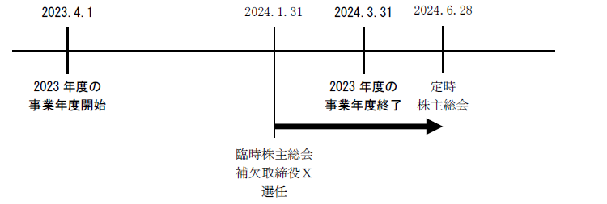
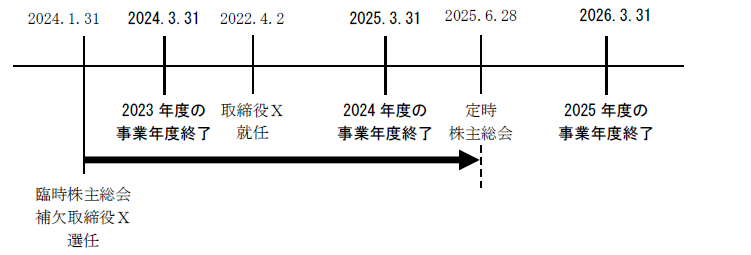
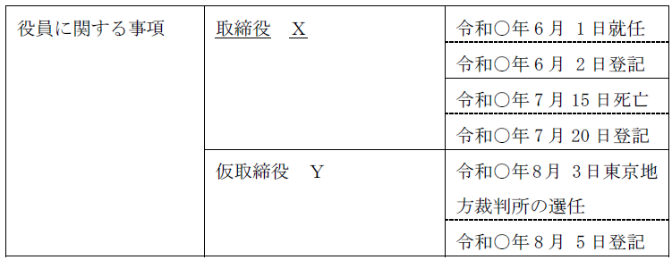
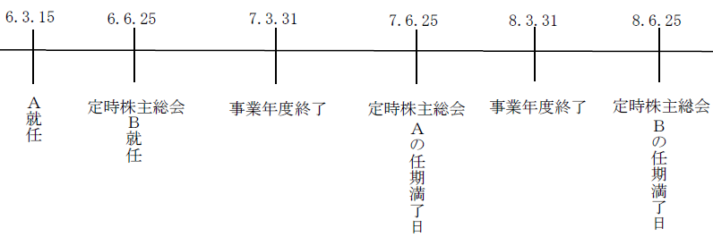
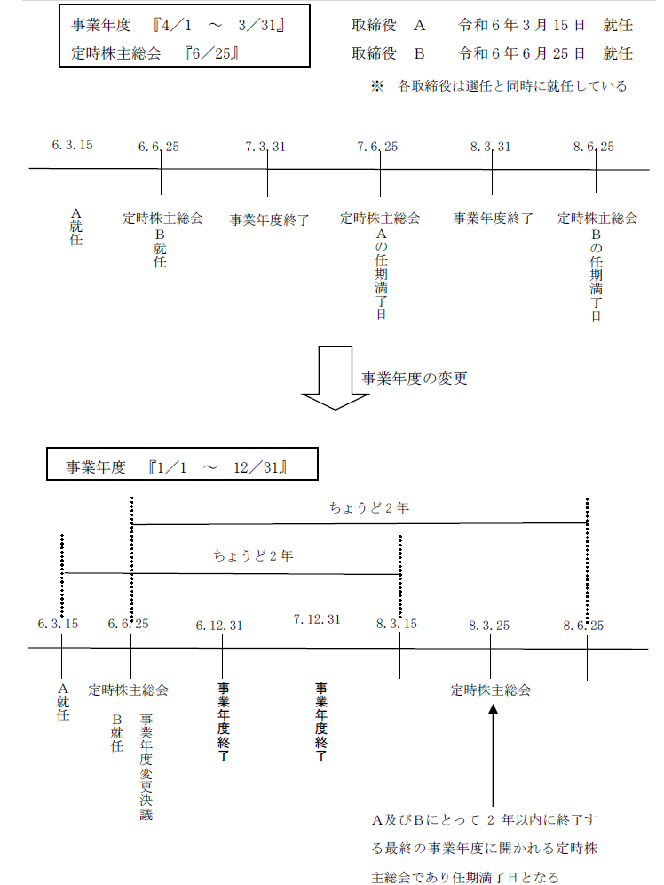

第２編 株式会社
第２章 機関
第３節 役員（取締役、取締役会、代表取締役）
Ⅰ 役員総説
役員とは、取締役、会計参与及び監査役をいうが（会社法329条1項）、「役員等」とは、役員に会計監査人を加えたものである。
役員等の役割
| 取締役 | 株式会社の業務執行の決定をし、業務を執行する |
| 監査役 | 取締役及び会計参与の職務の監査をする |
| 会計参与 | 取締役と共に計算書類を作成する |
| 会計監査人 | 計算書類等の監査をする |
株式会社と役員等の関係は、委任に関する規定に従うため（会社法330条）、被選任者がその地位に就くためには、被選任者による承諾が必要となる。
1. 選任決議
| 選任 | 解任 | |
| 取締役 | 普通決議（329Ⅰ） ※定足数は1/3まで軽減可 決議要件は加重のみ可 （会計監査人は除く） |
普通決議（339Ⅰ） |
| 監査役 | 特別決議（339Ⅰ、309Ⅱ⑦） | |
| 会計参与 | 普通決議（339Ⅰ） | |
| 会計監査人 | 普通決議（339Ⅰ） |
2. 例外的な選解任
| 選任 | 解任 | |
| 取締役 | 取締役・監査役選任権付種類株式を発行している場合には、種類株主総会の普通決議（347Ⅰ、108Ⅰ⑨） | ①累積投票で選任された取締役については、株主総会特別決議 |
| ②左記種類株主総会で選任された取締役・監査役の解任は、その種類株主総会の普通決議（監査役は特別決議） ※ | ||
| 監査役 | ||
| 会計参与 | ‐ | ‐ |
| 会計監査人 | ‐ | 監査役等による解任（340） |
※ 定款で別段の定めをした場合や当該種類株主総会において議決権を行使すできる種類株主が存在しなくなった場合は、株主総会の普通決議（監査役については、特別決議）
3. 退任事由
以下の事由は、役員すべてに共通する退任事由である。
| ①任期の満了（会社法332条） |
| ②委任の終了事由 ・役員等の死亡、破産手続開始の決定、後見開始の審判（会社法330条、民法653条） ・役員等の辞任（会社法330条、民法651条） |
| ③解任（会社法339条、854条） ※定足数軽減は3分の1まで（会計監査人除く） |
| ④欠格事由の発生（会社法331条） |
4. 補欠役員
(1) 補欠役員の選任
株主総会の決議によって、役員が欠けた場合又はこの法律若しくは定款で定めた役員の員数を欠くこととなるときに備えて補欠の役員を選任することができる（会社法329条3項）。
| 選任できる補欠役員 | 取締役（監査等委員会設置会社にあっては、監査等委員である取締役若しくはそれ以外の取締役）、会計参与、監査役 | |
| 決議機関 | 株主総会 | |
| 選任決議の有効期間 | 原則 | 補欠役員の選任決議後最初に開催される定時株主総会の開始の時まで（会施規96Ⅲ本文）（※1） |
| 例外 | ・株主総会決議ｏｒ定款による短縮可（会施規96Ⅲただし書） ・定款による伸長可 |
|
| 就任承諾時期 | 上記期間内であればいつでもよい | |
| 役員となった場合 | 任期 | 通常の役員と同じ任期である（※2） |
| 起算日 | 補欠役員として選任された時から起算（※3） | |
※1 ex. 事業年度が4月1日から3月31日までである場合において、2024年1月31日の臨時株主総会で補欠取締役Ｘが選任された場合、2023年度の事業年度（2023年4月1日から2024年3月31日まで）に関する定時株主総会（ex. 2024年6月28日）の開始の時に当該選任決議の効力は消滅する。

※2 定款で補欠役員の対象となる役員の残存任期までにすることができる
※3 補欠として選任されていた者が役員に就任した場合であっても、当該補欠役員の任期の起算点は就任時ではなく選任時（補欠の役員として選任された時）である。役員の任期については、就任時ではなく選任時を起算点とする会社法上の原則（会社法332条1項、334条1項、336条1項）が補欠役員についても適用されるからである。
ex. 事業年度が4月1日から3月31日までである場合において、2024年1月31日の臨時株主総会でＸが補欠取締役として選任され、それと同時に就任を承諾し、その後、2024年4月2日に取締役に欠員が生じて、Ｘが取締役として就任した場合、2024年1月31日から2年以内に終了する事業年度のうち最終のものである、2024年度の事業年度に関する定時株主総会（ex. 2025年6月28日）の終結時に、Ｘの任期が満了する。

(2) 決議事項の内容
株主総会で補欠役員を選任する際の決議事項の内容としては以下のようなものが考えられる（会社施行規96条2項）。
①Ａを取締役の補欠とする
②Ａを特定の取締役Ｂの補欠として選任する
③Ａ及びＢを補欠取締役として選任し、Ａを第1順位、Ｂを第2順位とする
④Ａを社外取締役の補欠として選任する
(3) 就任承諾の時期
補欠役員の就任承諾の時期については、特に規定はなく、選任された時でも、対象となる役員が欠けた後でもよい。
5. 役員の予選
在任中における役員の任期満了後の予選については、前任者の任期満了までの期間が比較的短く（1か月程度前の予選は、許されるとされている。昭41.1.20民甲271）、予選をしなければならない合理的理由の存在、予選後任期中に募集株式の発行等、株主の権利に変化がないといった場合にはできると解されている。
※代表取締役の予選
合理的な期間内（ex.1か月前）であれば、代表取締役の予選をすることもできる。予選される代表取締役は、既に取締役である必要がある。
ただし、予選された取締役が就任前に新しい代表取締役を予選しても、予選された取締役全員が従前の取締役と一致する場合でなければ予選された代表取締役の就任の登記を申請することができない（登研701P.207、221P.48）。選定権のない者が選定した、又は、選定権のある者が選定できなかったことになってしまうからである。
6. 一時役員の職務を行うべき者（仮取締役・仮監査役・仮会計参与）
裁判所は、役員が欠けた場合又は役員の員数が欠けた場合において、必要があると認めるときは、利害関係人の申立てにより一時役員の職務を行うべき者（仮取締役・仮監査役・仮会計参与）を選任することができる（会社法346条2項）。
一時役員の職務を行うべき者の権限は、正規の役員の権限と同様である。
※仮取締役・仮監査役・仮会計参与の登記
一時役員の職務を行うべき者（仮取締役・仮監査役・仮会計参与）は、裁判所の嘱託により以下のように登記される。

この後、正規の取締役の就任の登記をするときは、それと併せて一時取締役の職務を行うべき者に関する登記を抹消する登記を申請する必要があるか？
→ 必要はない。一時取締役の職務を行うべき者に関する登記は、正規の取締役の就任の登記を申請すると、職権により抹消されるからである（商登規68条1項）。
1. 任期
| 取締役 （332） |
会計参与 （334） |
監査役 （336） |
会計監査人 （338） |
|
| 任期 | 原則：選任後2年以内に終了する事業年度のうち最終のものに関する定時株主総会の終結の時まで 例外：指名委員会等設置会社の取締役、監査等委員会設置会社の監査等委員でない取締役及び会計参与は1年 |
選任後4年以内に終了する事業年度のうち最終のものに関する定時株主総会の終結の時まで | 選任後1年以内に終了する事業年度のうち最終のものに関する定時株主総会の終結の時まで | |
| 伸長 | 非公開会社（監査等委員会設置会社及び指名委員会等設置会社を除く）では、定款によって、任期を選任後10年以内に終了する事業年度のうち最終のものに関する定時株主総会の終結の時まで伸長可 | × | ||
| 短縮 | 定款又は株主総会の決議で可（監査等委員である取締役を除く）。※1 | ※2 | × | |
| 自動再任 | × | ※3 | ||
※1 定款によって、任期満了前に退任した監査等委員である取締役の補欠として選任された監査等委員である取締役の任期を退任した監査等委員である取締役の任期の満了する時までとする場合は可能（会社法332条5項）
※2 定款によって、任期の満了前に退任した監査役の補欠として選任された監査役の任期を退任した監査役の任期の満了する時までとする場合のみ可能
※3 選任後1年以内に終了する事業年度のうち最終のものに関する定時株主総会において別段の決議がされなかったときは、当該定時株主総会において再任されたものとみなされる。
【任期の計算】
事業年度が4/1～3/31、定時株主総会の開催日を6月25日だった場合に、取締役Ａ及びＢの任期はいつ満了するか。なお、Ａは令和6年3月15日に選任され、就任し、Ｂは令和6年6月25日に選任され、就任しているものとする。

2. 会社成立時からいる役員等の任期の起算点
株式会社の成立日が任期の起算点となる。株式会社の成立日は、設立登記の申請日（登記記録では「会社成立の年月日」の欄に記載される）である。
3. 任期の変更
役員の任期を短縮する旨の定款変更をした場合、在任中の役員の任期も短縮される。定款変更の時点において既に変更による短縮後の任期が満了している役員があるときは、当該役員は定款変更時に任期満了により退任する（平18.3.31民商782）。
ex. 事業年度が4月1日から3月31日までである指名委員会等設置会社及び監査等委員会設置会社でない株式会社において、令和6年8月に開催された臨時株主総会で、取締役の任期（変更前の任期は2年）を「選任後1年以内に終了する事業年度のうち最終のものに関する定時株主総会の終結の時までとする。」旨の定款変更がされたときは（令和6年の定時株主総会は令和6年6月に開催されている）、令和5年6月に開催された定時株主総会で選任されていた取締役Ａの任期は、当該定款変更時に満了する。
また、取締役の任期を伸長する旨の定款変更をした場合、特別の事情がない限り、在任中の取締役の任期も伸長されることとなる（平18.3.31民商782）。
4. 特殊な任期満了
(1) 取締役
| ① 監査等委員会又は指名委員会等を置く旨の定款変更をした場合 |
| ② 監査等委員会又は指名委員会等を置く旨の定款の定めを廃止する定款変更をした場合 |
| ③ 非公開会社から公開会社となる定款変更をした場合（監査等委員会設置会社及び指名委員会等設置会社がするものを除く。） |
(2) 会計参与
| 上記①から③の定款変更をした場合 |
| ④ 会計参与を置く旨の定款の定めを廃止する定款変更をした場合 |
(3) 監査役
| ① 監査役を置く旨の定款の定めを廃止する定款変更 |
| ② 監査等委員会又は指名委員会等を置く旨の定款変更 |
| ③ 監査役の監査の範囲を会計に関するものに限定する旨の定款の定めを廃止する定款変更 |
| ④ 非公開会社から公開会社となる定款変更をした場合をした場合 |
(4) 会計監査人
| 会計監査人を置く旨の定款の定めを廃止する定款の変更をした場合 |
5. 事業年度の変更
事業年度の変更により、任期が満了することもある。
